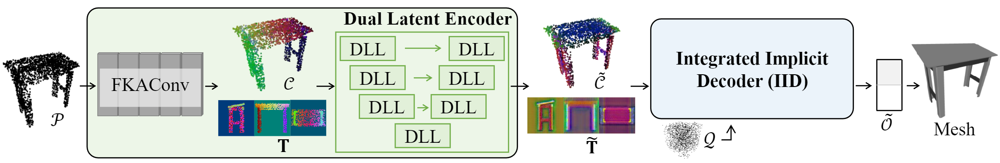
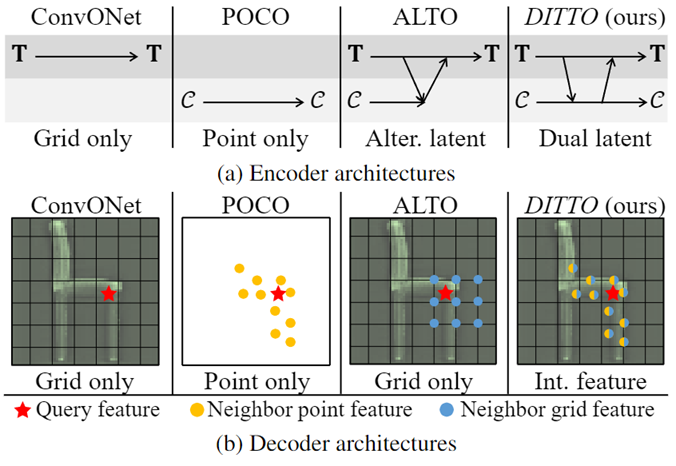
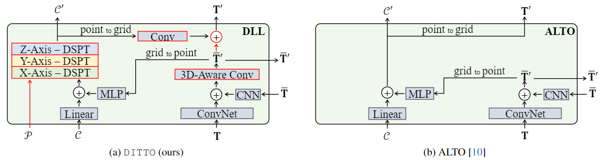
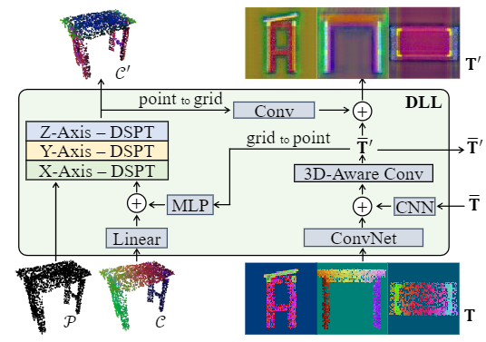

DITTO :
D ual and I ntegrated Lat ent To pologies for Implicit 3D Reconstruction
CVPR 2024

Summary
DITTO addresses a crucial task in 3D computer vision: the implicit 3D reconstruction from noisy and sparse point clouds. This network architecture significantly enhances 3D understanding ability by leveraging latent features in two modalities: grid and point latents. The core innovation lies in exploiting the synergy between these two types of latents. Grid latents, such as voxels or triplanes, are inherently robust to noise and useful for representing implicit fields, though they are somewhat detail-limited due to resolution constraints. Conversely, point latents, despite their inherent ambiguities, have the potential to capture much finer details due to fewer resolution limitations. Our contribution is in effectively integrating these two latent types within a network architecture, markedly improving 3D reconstruction performance both qualitatively and quantitatively. Our research holds significant potential for various applications involving implicit fields.
Methods
[Figure] Overview of DITTO
DITTO is an implicit 3D reconstruction network. Given a point cloud input, DITTO estimates latents representations of an implicit fields, in its Dual Latent Encoder. In the Integrated Implicit Decoder (IID), DITTO estimates the implicit fields for a given query positions. By densely calculating occupancy values in 3D space, DITTO facilitates the reconstruction of a mesh by applying Marching Cubes algorithm.

[Figure] Comparison with the previous methods.
Encoder
[Figure] Comparison of main feature extraction module of ours (DLL) and ALTO's.
In the encoder, DITTO utilizes synergy from grid (T) and point (C) latents similar to previous work, ALTO. The difference is that DITTO emphasizes the feature extraction of point latent by employing our proposed more powerful point encoder, named dynamic sparse point transformer (DSPT). Based on the difference, DITTO can preserve model detailed geometrical features in its latents by leveraging the resolution-efficiency of point latent. And we stabilize ambiguity embedded in point latent by utilizing grid latent, which is stable due to its regular grid structure.Implicit Decoder
[Figure] Illustration of DLL architecture.
In the decoder, unlike the previous methods, DITTO considers both grid latent and point latent at once by integrating them. This integration facilitates the generation of more detailed decision boundaries in continuous implicit fields.